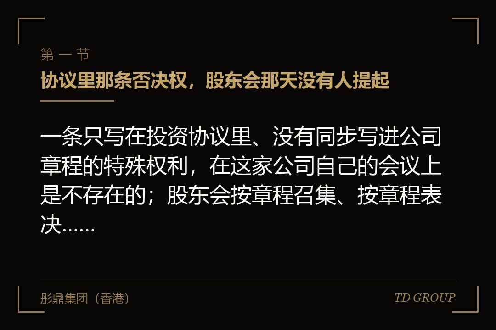
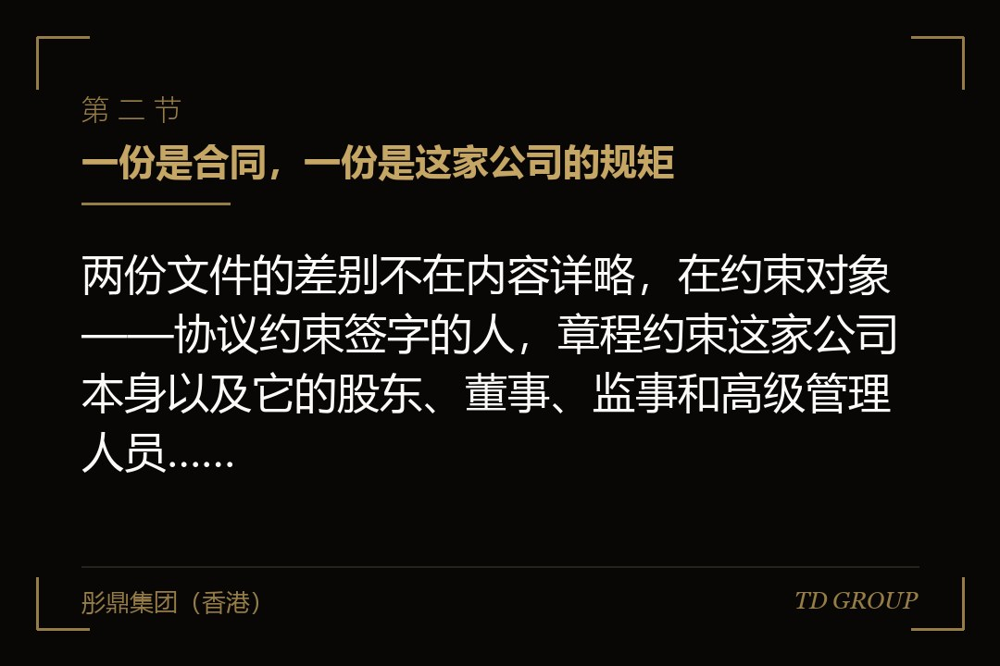
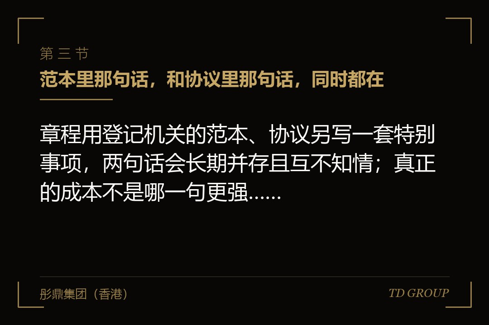

一、协议里那条否决权，股东会那天没有人提起

结论先行：一条只写在投资协议里、没有同步写进公司章程的特殊权利，在这家公司自己的会议上是不存在的；股东会按章程召集、按章程表决、决议按章程成立，整个流程里没有任何一个环节会去翻那份协议。
假设有这么一家做轨道交通信号设备的企业。三年前它引进过一家机构投资人，对方投了三千万，占一成五。投资协议谈了两个多月，里面有一条写得很明确：公司增加注册资本、引进新股东，须事先取得该投资方的书面同意。这条是投资方谈判时最看重的几条之一，写在协议正文，字号和别的条款一样大。
交割之后，公司办的是注册资本与股东名册的变更登记。章程用的还是当初设立时从登记机关那里拿来的范本，这次只改了两处：注册资本那个数字，和股东名单那几行。协议里那十几条特别权利，包括上面那条事先同意，一条都没有写进章程。经办这件事的是行政部门的同事，他手里的清单是登记机关要的材料清单，那张清单上没有"把协议条款并进章程"这一项。
两年后，一家产业方想进来。创始人一方认为这是个必须抓住的窗口，机构投资人认为价格给低了，不同意。创始人一方持股六成五，加上两位早期个人股东，表决权超过三分之二。股东会照章程发了通知、照章程开了会、照章程作出增资决议，变更登记也在半个月内办完了，新股东的钱进了账。
机构投资人拿着那份协议去主张的时候，事情的形状是这样的：股东会决议在公司层面是按章程作出的，章程里没有"须经该投资方事先同意"这个门槛，登记机关也不会去审查一份它看不到的合同；决议成立、登记完成、新股东已经是股东了。投资方能主张的，是创始人一方违反了股东协议，要承担违约责任——那是另一件事，要另案主张，要证明损失，而且赢了也换不回已经被稀释掉的那一成五变成的一成一。
这里最值得记住的一句话是：那条否决权从签字那天起，一直只是一份合同上的承诺，它从来没有变成这家公司的规矩。它对创始人个人有约束力，对这家公司没有。而投资方要拦的那件事，恰恰是公司做出来的。
有几件相邻的事此处只作一句交代：投资方否决事项清单具体该列哪些、怎么把它谈短，一致行动协议怎么签、什么时候会自己松开，代持怎么还原、还原过程中要补哪些文件，上市申报前特别股东权利什么时候终止、终止文件怎么写才算数，实际控制人在审核口径下怎么认定，出资瑕疵怎么补，领售权与优先购买权的行权机制，以及优先清算权里优先额倍数、参不参与剩余分配、多轮之间怎么排顺位这套算术——这些都另有专门的讨论，本文一律不展开。
本文只讲一层：投资协议与公司章程这两份文件之间是什么关系，不一致的时候按哪一份算，以及怎么让它们在每一轮之后重新对齐。
二、一份是合同，一份是这家公司的规矩

结论先行：两份文件的差别不在内容详略，在约束对象——协议约束签字的人，章程约束这家公司本身以及它的股东、董事、监事和高级管理人员，而公司的钱是由公司机关按章程分出去的。
先把最基础的那层说清楚。公司章程是设立公司时就要制定的文件，申请设立登记时要连同申请书一起提交给公司登记机关；后续变更登记事项涉及修改章程的，还要提交修改后的章程。它不是一份摆设：法律直接规定了它对公司、股东、董事、监事、高级管理人员具有约束力。也就是说，董事会按什么规则开会、股东会哪些事项要多少表决权、利润怎么分、公司清算时剩余财产怎么分，执行的人手里拿的是章程。
股东协议不一样。它是一份合同，效力来源是各方的合意，约束的是在上面签了字的那些人。一个很容易被忽略的技术细节是：不少投资协议里，公司本身也是签约方之一，这时公司确实受协议约束；但即便如此，公司的股东会、董事会、清算组这些机关在履职时，依据的仍然是章程和法律，它们不会自动把一份合同条款转译成会议规则。更常见的情形是，协议只由股东各方签署，公司连当事人都不是。
打个比方：股东协议像几位合伙人私下签的一份君子协定，写得再细，也只在签字的这几个人之间生效；公司章程像这栋楼的物业管理规约，贴在门口、备在管理处，谁进来都要按它来。你和邻居约好楼道归你们两家用，这是有效的约定，但物业按规约清理楼道时不会因为你们那份约定停手——它执行的是规约。你能做的是告邻居违约，不是让物业认账。
这个差别在两种场合会显形，而它们的处理方向正好相反。头一种是纯粹发生在股东之间的争议：甲乙两位股东为一笔分红打官司，双方都是协议签字方，裁判者有可能去探究各方的真实意思，按协议处理，即便章程写的是另一套。
第二种是涉及公司机关行为效力、或者涉及公司之外第三方信赖利益的场合：一份对外签的合同有没有效、法定代表人有没有权限、一次决议成立不成立、登记的股东是谁——这些以章程与登记为准，公司登记事项未经登记或者未经变更登记，不得对抗善意相对人。
所以那句常被写进协议的"本协议与公司章程不一致的，以本协议为准"，作用是有限的：它在签字各方之间可能管用，但它管不到公司机关的执行动作，更管不到不知情的第三方。它是一句关于违约责任的话，不是一句关于公司怎么运转的话。企业方要防的不是这句话写得不好，是把这句话当成了并档动作本身——写了这句，就以为章程不用改了。
还有一层容易被漏掉：修改章程本身是有门槛的。有限责任公司的股东会作出修改章程的决议，须经代表三分之二以上表决权的股东通过；股份有限公司也是三分之二这一档。这意味着并档不是一个可以随手补办的行政动作，它需要一次真实的、够票的股东会决议。
等到几轮融资之后股权已经分散、当年那几位早期股东有的联系不上，这道门槛就从"顺手办掉"变成了"办不动"。这也是为什么并档要放在交割那个节点做——那一刻各方都在桌上，都有配合的动机。
三、范本里那句话，和协议里那句话，同时都在

结论先行：章程用登记机关的范本、协议另写一套特别事项，两句话会长期并存且互不知情；真正的成本不是哪一句更强，是公司每一次开会都要临时判断按哪一句办。
假设有一家做船用涂料的企业。设立时用的是登记机关提供的章程范本，表决条款照抄了范本那两句：股东会作出决议须经代表过半数表决权的股东通过；修改章程、增加或者减少注册资本、公司合并分立解散或者变更公司形式的决议，须经代表三分之二以上表决权的股东通过。这两句写得没有任何问题，它是绝大多数公司的默认配置。
后来它融了两轮。两份投资协议各带一份事先同意清单，合起来十二项：变更主营业务、单笔超过一定金额的对外投资、超过一定金额的借款与对外担保、关联交易、增资与股权转让、聘任与解聘财务负责人、年度预算与超预算开支、上市方案与中介机构选聘等等。这十二项里，有八项在章程口径下属于"过半数就能通过"的一般事项。
于是董事会秘书每次发股东会通知时都要做一次判断。这次的议案，在章程里是一般事项，过半数就能过；在协议里属于须事先取得两家投资方书面同意的事项。要不要先去拿那两份同意函？拿了，等于在实际操作上承认协议对公司的会议有约束力，以后每一次都得拿；不拿，按章程开会，决议在公司层面成立，但创始人一方就把自己放到了违约的位置上。
这家公司实际的做法是每次临时问律师。听上去是稳妥的，代价是隐性的：一个本来两天能定的事情，变成两周；急的事情干脆绕开股东会，用董事会决议或者管理层决定先做了，再补程序——而"先做后补"这个习惯一旦形成，就是尽调时最容易被翻出来的那一类问题。真正被消耗掉的不是律师费，是决策速度，而决策速度在融资窗口和交易窗口面前是能直接换算成钱的。
范本这件事还有一层值得单独说。范本条款是为一般情形准备的最低配置，它默认公司只有一类股东、一类权利、按出资比例说话。一家融过机构资金的公司早就不是那个形状了：股东分了层，权利分了类，有人有事先同意权，有人有优先分配的位置。
章程还停在范本那一版，等于这家公司对外呈现的规则和它内部真实的规则是两套。这不是谁疏忽，是因为改章程要开股东会、要三分之二、要跑登记，而范本能一次通过——阻力最小的那条路，一开始就把公司引到了这里。
正确的动作不复杂：交割之后，把协议里那十二项逐条过一遍，判断哪几项应当写进章程成为公司的特别表决事项、哪几项留在协议里作为股东之间的合同义务就够了，然后一次性改到位。这一步花的时间以天计，省下来的是往后每一次开会的判断成本。
四、章程改了，但没去办变更登记
结论先行：股东会决议加章程修正案，只完成了公司内部这一半；涉及登记事项的，不去办变更登记，对外仍然以登记的那一版为准，而对方并不需要知道你内部改过什么。
假设有一家做智能门锁的企业。这一轮融资交割时该做的都做了：股东会决议齐备，章程修正案各方都签了字，注册资本从五千万加到六千二百万，法定代表人也从创始人换成了新聘的总经理。文件签完那天，经办的同事把一整套原件扫描归档，心里认为这件事结束了——钱到了，字签了，文件在。变更登记这一步被排在了"下周去办"，然后拖了七个月。
这七个月里公司照常经营。有一次它和一家渠道商谈成了一份独家经销安排，对方要求由法定代表人签字。公司这边出面签字的是那位已经在内部卸任、但在登记信息上仍然显示为法定代表人的创始人。渠道商在签约前做了它该做的事：在公示系统上查了这家公司的登记信息，名称、住所、注册资本、法定代表人姓名都对得上，于是签了。
后来公司想以"这份合同不是有权代表签的"为由主张不受约束，这条路是走不通的。公司登记事项发生变更应当依法办理变更登记，未经变更登记，不得对抗善意相对人；渠道商查的就是登记那一版，它没有义务、也没有渠道去知道这家公司内部换过人。这份合同公司要认。
这个例子里有两个细节值得单独拎出来。其一，公示系统上向社会公开的是登记事项——名称、住所、注册资本、经营范围、法定代表人姓名、股东或者发起人的姓名或名称，以及按规定应当公示的出资与股权变更等信息；章程全文本身通常不在向社会公开的范围里。
也就是说，外面的人看得到的是那几行结果，看不到你章程里写了什么，更看不到你协议里写了什么。这恰恰说明登记这一步的分量：它是公司内部安排能够对外产生公信力的那个出口，除它之外没有别的通道。
其二，"改了没登记"和"根本没改"，在对外效果上是一样的，而在内部效果上不一样。内部已经生效的决议在股东之间是算数的，那位卸任的创始人对内确实已经不是法定代表人了——所以公司对他可能有追偿的空间。但这解决不了对外那份合同必须履行的问题。企业方要记住的是，这类事故的损失几乎从来不是登记那点手续费，是那份必须履行下去的合同，或者是一次被迫接受的条件。
所以在流程上，交割清单里那一行不能写成"修改章程"，要写成"修改章程并完成变更登记"，并且把登记机关的受理回执或者变更后的营业执照作为该项完成的凭证。缺了后半句，这一行永远会停在"文件已签"这个状态上，而它看上去和"已完成"长得一模一样。
五、三轮三份协议，现行有效的到底是哪一套
结论先行：每一轮都签一份新的股东协议，条款互相覆盖又互相保留，而章程一次没动，几年之后现行有效的规则会散落在几份协议、若干补充协议与边函里，没有任何一份文件能给出完整答案。
假设有一家做再生铝的企业，融过三轮。
头一轮的股东协议给了投资方几项权利，其中包括后续增资时按持股比例继续参与的权利。第二轮进来一家新机构，签了一份新的股东协议，里面有一句常见的表述：本协议与各方此前签署的协议不一致的，以本协议为准。但同一份协议的另一处又写着，头一轮协议项下的某几条继续有效。
第三轮规模更大，签的是一份更完整的股东协议，约定各方此前签署的股东协议自本协议签署之日起终止，但附件一所列条款继续有效——附件一列了六条，其中两条指向头一轮，四条指向第二轮。除此之外，还有三份补充协议和两封只有单一投资方与公司签署的边函。
章程从头到尾只改过两次，改的都是注册资本和股东名册那几行。
这家公司后来换了一位财务负责人。他到任后想搞清楚一件很基础的事：现在这家公司，哪些事需要投资方点头、需要哪几家点头、点头的形式是什么。这个问题他花了三周才拼出一份清单，而且拼完之后自己也不确定完整——因为其中一封边函是在一位已经离职的同事的邮箱里，是尽调时才被翻出来的。
这类混乱平时不发作。它发作的时点非常固定：需要在一周之内作出一个决定的那一天。可能是一家产业方给了一个有时限的报价，可能是一笔银行授信要求提供股东会决议，可能是某一轮投资人要行使回购而对方律师发来了函。这时候公司要在几天内说清楚"我方按哪一套规则行事"，而这件事本来需要三周。
如果这三轮里每一轮交割后都做了并档，情况会完全不同：章程上会写着现行有效的特别表决事项与表决门槛，协议只负责纯股东之间的那部分内容，任何一个新来的人打开章程就能看到公司的规则骨架。并档的价值不在于章程更完整，在于它把"现行有效"这四个字固定在了一份文件上——而这份文件恰好是必须经过三分之二表决权通过、必须提交给登记机关的那一份，它天然抗不了随手改。
这里要说清一件公平的事：多轮协议互相覆盖不是谁不专业。每一轮的律师都在为本轮的当事人服务，本轮的任务是把本轮谈成，"把历史条款理干净"从来不在任何一方本轮的必办清单上。所以这件事必须由企业方自己认领——它是公司里只有企业方才会痛的那一类事，指望任何一方的外部顾问自发把它做掉，是不现实的。
六、优先分红和剩余财产分配，是被谁执行掉的
结论先行：分红方案是财务和董事会按章程口径做出来的，清算时的财产分配方案是清算组按章程和法律编制的，这些执行者不是那份协议的当事人，也没有义务去看它。
假设有一家做兽用疫苗的企业。协议里约定得很清楚：某一轮投资方在公司作出年度分红时，享有优先于普通股股东取得分配的权利。章程里的分红条款还是范本那句——按照实缴的出资比例分取红利。
前两年公司不分红，这条约定安安静静躺着。第三年经营转好，董事会提了一个分红方案。做这个方案的是财务负责人，他的依据是章程和当年的可分配利润；法务复核的是决议程序合不合规、有没有触及需要事先同意的事项清单——那份清单里恰好没有"分红方案的具体分配口径"这一条，只写了"分红"这个事项本身要投资方同意，而投资方是同意分红的。方案就这么过了，钱按实缴出资比例打了出去。
投资方发现自己少拿了的时候，钱已经到各方账上了。它当然可以主张违约，可以要求补足，但这已经从"我有一项优先权利"变成了"我要向别人追一笔钱"，而后者的难度和前者完全不是一个量级。
剩余财产分配那一头更硬。公司决定解散并进入清算的，清算组要清理财产、编制资产负债表和财产清单、制定清算方案。清算组履职的依据是法律和章程；它通常不是那份股东协议的当事人，那份协议它甚至可能根本没见过。章程写的是按出资比例分配剩余财产，它就按出资比例编方案。
此处只讲执行主体这一层——优先清算权本身怎么设计，优先额是投资价款的几倍、拿完还参不参与剩下的分配、多轮之间是排队还是同顺位，那套算术另有专门的讨论，本文不展开。
把这两个例子放在一起看，规律很清楚：凡是需要公司这个主体或者公司的机关去执行的权利，都必须落到章程上；凡是只需要股东之间互相配合就能实现的安排，留在协议里是可以的。
按这个标准过一遍，通常必须进章程的有这么几类——股东会与董事会的表决门槛和特别事项、董事的提名与选举规则、利润分配的口径与顺序、剩余财产分配的口径与顺序、股权转让的限制与同意程序、增资时原股东的参与规则、法定代表人的产生与权限边界。
而诸如某位股东对另一位股东的承诺、创始人个人的竞业与服务期约定、各方之间的信息提供义务与保密义务，留在协议里就够了，它们本来就是人和人之间的事。
这个划分标准比"能写的都写进章程"更实用。章程是要提交给登记机关、要经三分之二表决权通过的文件，它每改一次都有成本，把不需要公司出面执行的条款也塞进去，只会让往后每一次微调都变成一次股东会。判断标准就一句话：这条权利要兑现的时候，需不需要公司自己动手。
七、尽调把这几份文件摆在一起的那天
结论先行：不一致本身在公司内部可以长期共存，但只要进入一次需要外部机构核查的交易，历史上每一处不一致都要被逐条解释，而解释是要时间的，交易窗口不等。
假设有一家做儿童安全座椅的企业，谈到了被一家上市公司并购。买方的中介机构做尽调，把这家公司历轮的四份股东协议、三份补充协议、两封边函和三个版本的章程摆在一起做穿透比对，列出了十九处不一致。
这十九处大致是三类。头一类，两份文件都写了同一件事但写法不同，比如章程里董事会五人、协议里约定投资方有权委派两名董事而章程未作对应安排；第二类，只写在协议里、章程完全没有，占的比重最大；第三类，只写在章程里而协议没提，通常是设立时范本带来的、后来实际上从未执行过的条款。
尽调的要求不是"你们把它改对"，而是对每一处出一份书面说明：当时为什么这样约定、实际是怎么执行的、有没有因此产生过争议、现在以哪一份为准、以及后续怎么处理。其中有六处需要全体股东出具确认函，确认历史上的某次决议或者某次分配各方均无异议。这里卡住的往往不是道理，是人——这家公司有一位早期个人股东已经出境定居多年，联系上花了三周，签署与公证认证又花了五周。
这两个月是从交易时间表里挤出来的。买方那边有自己的董事会日程、有自己的审批节奏，也有随时可能变化的行业判断。企业方在这种时候是最没有议价能力的：不是因为公司不好，是因为时钟在响，而对方知道你在等。
还有一层更贵：中介机构在文件里写下"历史沿革中存在公司章程与股东协议约定不一致的情形"这句话之后，它就成了一个需要被持续处理的事项。哪怕最后结论是不构成实质性障碍，它也会在后续每一轮核查里被重新问一遍。企业方为它付出的不只是当期的时间，是往后每一次交易都要带着的一段说明。
反过来说，这也是并档最容易被算清楚的一笔账：交割那天做并档，成本是一次股东会、一份章程修正案、一次变更登记，以天计；等到交易桌上再做，成本是两个月加一段永久的说明。这两个数字之间差着一个数量级，而它们对应的动作其实是同一个。这类账在华尔街彤鼎俱乐部的讨论里被反复提起过。
八、这一轮交割之前，先把并档这件事定下来
结论先行：并档要在本轮协议还没签字的时候写进去，成为交割条件的一部分；等交割完再商量，各方的配合意愿会以肉眼可见的速度下降。
假设有一家做商用无人机的企业，正在谈这一轮。它这次的做法是把并档拆成三件事，写进本轮的交易文件里。
其一是清单：把本轮投资协议里的股东权利条款逐条过一遍，标出哪几条同步进章程、哪几条留在协议。判断标准就是上一节那句话——这条权利兑现的时候需不需要公司自己动手。它最后标出七条进章程，其余留在协议里。这份清单作为附件附在协议后面，双方签字确认，避免事后就"当时说的是哪几条"再吵一轮。
其二是时点与凭证：章程修正案的文本在签署本轮协议时就一并定稿，作为附件；股东会决议与章程修正案的签署列为交割的先决条件之一；变更登记的受理回执或者变更后的营业执照，作为交割后一定期限内必须完成的交付物，并约定逾期的处理方式。这里最要紧的一条是把凭证写死——写"办理变更登记"，事情会停在"已提交"；写"取得变更后的营业执照并交付各方"，它才有终点。
其三是往后每一轮怎么并档：约定每完成一轮融资，公司在一定期限内出具一份现行有效股东权利条款汇总表，逐条注明该条出自哪一份文件、是否已进章程、现行是否有效，并送各方书面确认。这一条看起来最不起眼，实际上是防住第五节那种局面的关键——它把"理清楚历史"这件事从一次性的大工程，拆成了每轮一次的小动作，而且指定了责任人。
如果这一轮已经签完了、章程也已经没改，也不是没有办法。
可行的顺序是：先自己把清单拼出来，把历轮协议、补充协议、边函和历版章程列成一份对照，标出每一条现在是不是还有效、和章程有没有冲突；然后按前面那个标准判断哪几条应当进章程；接着找一个各方都有配合动机的时点把它一次性做掉——通常是下一轮融资交割、一次股权激励的落地、或者启动一项需要全体股东配合的工作那时候；最后是把变更登记办完，拿到凭证。这件事本身不难，难的是它永远排在所有事情后面，因为它今天不做也不会有任何东西报错。
这也正是这件事的性质：它是一类不会报警的风险。章程还是那份章程，协议还是那份协议，公司照常经营、股东会照常开、决议照常通过，一切看上去都很正常。它显形的时点只有三个——有人要行使一项协议里的权利、有人在外面和公司签了一份合同、或者有外部机构来把这几份文件摆在一起看。前两个时点是被动的，第三个时点是你自己选的，而恰恰在第三个时点上，你的议价能力最低。
彤鼎集团（香港）有限公司在为企业方梳理历轮融资文件与章程的对照关系时，通常从这份清单开始做；涉及审计、法律意见、证券发行与承销等持牌业务的，一律由具备相应资质的合作机构承做。以上为市场经验性表述，具体安排以各方签署的协议约定与现行法律、行政法规正式文本为准。